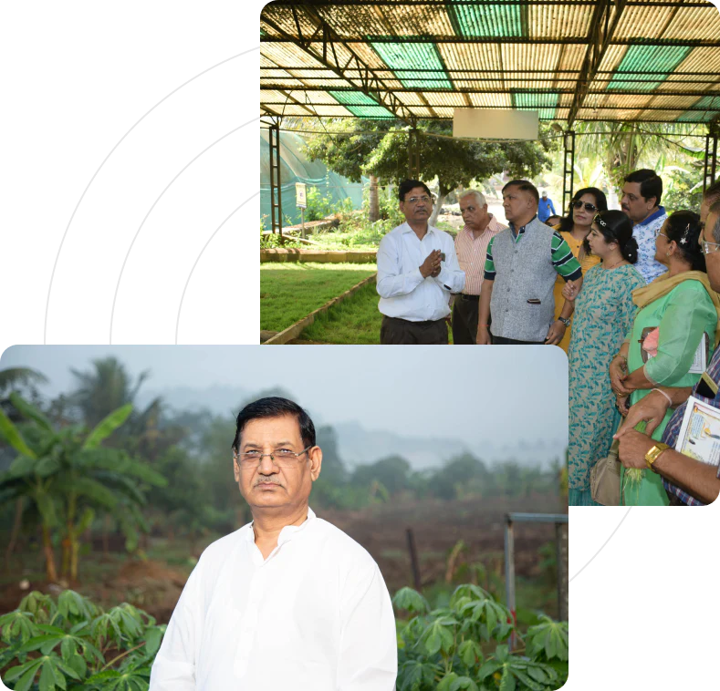
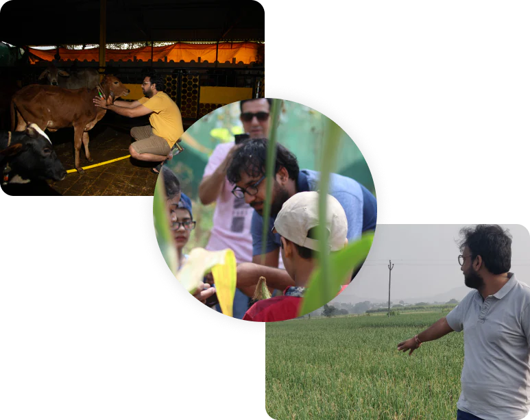
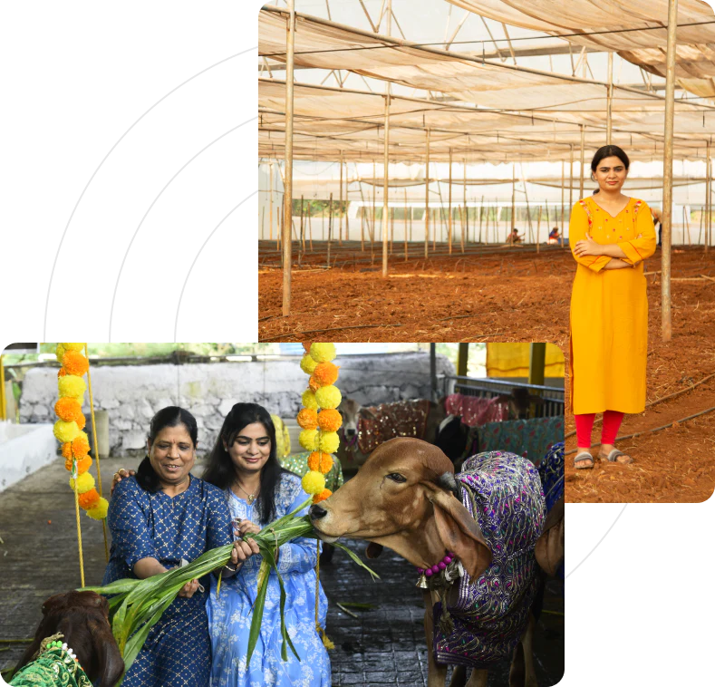
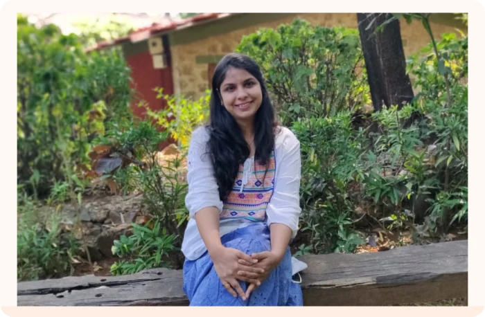
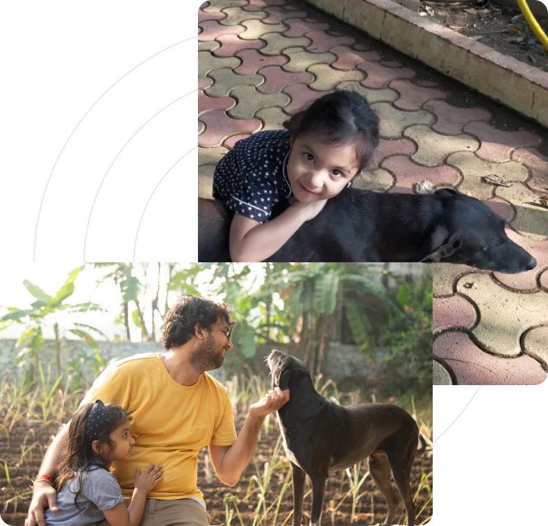
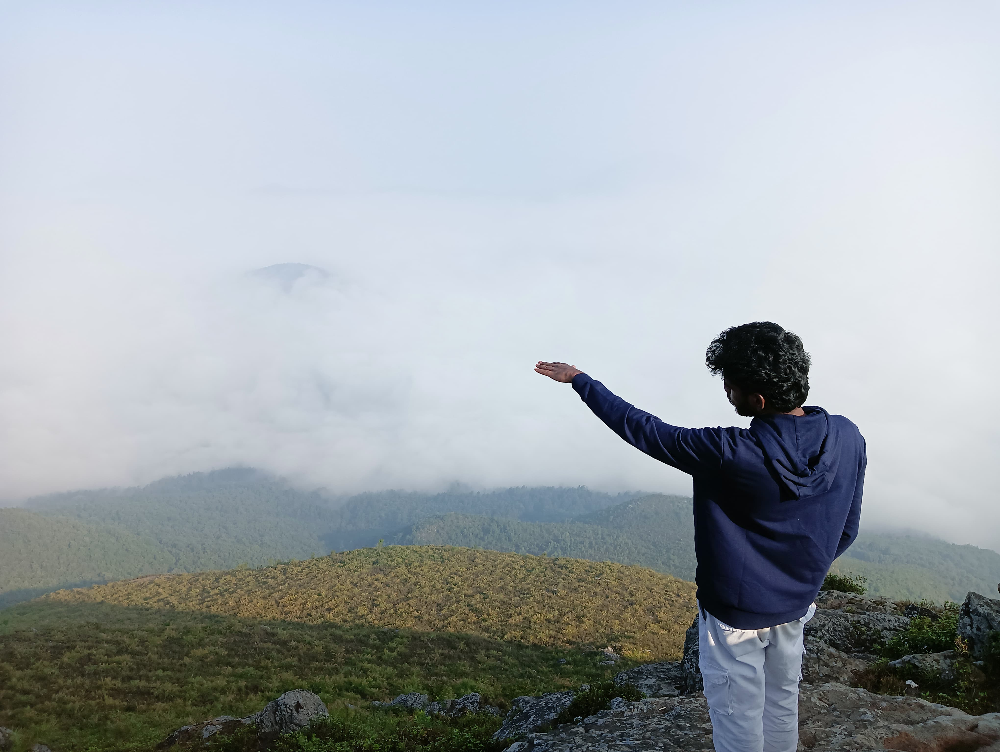

Mr. Dinesh Kedia ~ Crop Scientist, Plant Whisperer.
Accomplishments: Founder @Kedia Organics, Chief Stock Broker @BSE, President @Lions Club of Kalyan.
Say hi...
“Namaste. I am Dinesh Kedia, 3rd generation Farmer from the Kedia Family Tree, & the
Founder of Kedia Organics. It’s very nice to meet you. When I was little, Pure & Desi food
was all I knew. Through my humble venture, I wish to bring back the same good old days
for our children and grandchildren. The love for farming runs in our Blood. My father and
his father before him were Farmers on small family land. But I always wished to go one
step further to share the goodness of Organic with you all. I have always preferred to
personally oversee the ongoings of our farms. I visit our Kalyan farm at 5:30 every
morning to check on our greens, instruct our farmers, delegate tasks to my family and
perform quality checks. Visit our Farm someday.
I’ll be happy to take you on a tour myself.”
Get to know him better..
Our Lead Farmer is a Philanthropist Soul. He has a way with plants. Whatever he sows,
grows. Always! His idea for KOAF is simple- “We must share the bounties nature bestows
upon us. People should benefit from our produce, irrespective of profits.” KOAF is his life’s
work and he’s on a mission to share his love for Organic Food & truly help people lead a
healthier lifestyle.
Accomplishments: Co-founder @Kedia Organics, Stock Broker @BSE, Farmer Educator
Say hi...
“Hi! I’m Nitin. It’s me you’ve been listening to all this while. (if you read Our Story) It’s great
to finally introduce myself. I’m the 4th generation farmer from the Kedia Family Tree and
the Co-founder of Kedia Organics. My journey can be described in 3 words: Finance to
Farming. My time in the U.K inspired me to look for a realistic solution to our problem of
Chemical Farming. I wanted to find ways to battle this toxic “conventional” method and
bring back the good old natural processes that helped our ancestors live a long and
disease-free life.
My role at KOAF involves partnering with organic farms across India to make the best
organic produce available for our customers. It takes me across India to meet farmers and
educate them on the benefits of Organic & Primitive Growing Practices. 60% of the
conventional farmers we educated have switched to Organic farming. I consider that our
biggest achievement. This keeps me on the lookout for technologically advanced solutions
to make our farm, our produce, our service, and our partnerships a class-apart. I hope you
can now enjoy every meal knowing that your Family Farmers will grow only the best for
you.”
Get to know him better..
Our Lead Farmer is a Philanthropist Soul. He has a way with plants. Whatever he sows,
grows. Always! His idea for KOAF is simple- “We must share the bounties nature bestows
upon us. People should benefit from our produce, irrespective of profits.” KOAF is his life’s
work and he’s on a mission to share his love for Organic Food & truly help people lead a
healthier lifestyle.


Mrs. Prerana Kedia ~ Packaging Queen, Supply Chain Wizard.
Accomplishments: Co-founder @Kedia Organics ,Multi-tasking Super-mom. Makes hard work look easy as a breeze.
Say hi...
“Hello. I’m Prerana. It’s lovely seeing you here. You guessed it right, like Nitin, I also have a
background in Finance with no formal training in Farming. But my husband & father-in-
law’s passion inspired me to learn more about it each day. After years of studying,
planning, and trial, I’ve created a system to ensure that your family receives only freshly
picked produce, packed safely and sustainably. My day to day duties involve coordinating
with partner farmers and obtaining the finest organic produce from farms across India. We
hate the idea of precious food going to waste, thus, I instruct our on-farm team & partners
to only harvest fresh quantities to fulfil everyday orders.
These fresh batches go to our pack-house where we sanitize, pack, and dispatch your
order. We opt for eco-friendly & biodegradable packaging to reduce our Carbon Footprint.
Certifications, photography, and social media management also fall under my purview. It
brings me great joy to know that we are creating change, no matter the pace. Our family
proudly contributes to the Organic Slow-Food Revolution and we invite you to be a part of
our journey.”
Get to know her better..
Prerana exemplifies multi-tasking. She manages the Kedia House, her toddler, and the
Kedia Business like it were Sunday brunch! She plays a critical role in packaging, procuring
all our organic certifications, keeping up compliances, and creating systems that make
sure everything is done by the book. She is the brains behind our operation.
Mrs. Pooja Gupta ~ Master Influencer, President of Pep-talks.
Accomplishments: Successful Mom Boss. Makes BIG things happen.
Say hi...
“Hey! It’s Pooja Gupta. I’m so glad you’re here. You must think, Woah! What a family!.
I know. But farming isn’t simply tradition to us. It’s our Passion. It completes us in ways we
cannot fully describe. Naturally, Kedia Organics holds a special place in my heart. I was an
active member before my marriage, and I’ll always be.
I manage Customer Relationships, and Influencer Marketing here & I feel proud to say that
some of the most loved celebrities are now regular clients. But it wouldn’t have been
possible without your support and love. Please feel free to reach out if you’d ever like to
partner with us, or simply get to know us.”
Get to know her better.
Pooja exudes confidence in everything she does. She pushes us to dream bigger. The way
she approaches people, forms genuine connections, and makes it happen; is simply
beyond us. Never afraid to experiment and go the extra mile. She’s effortlessly raising two
beautiful daughters, managing her affairs at home, and actively helping KOAF grow. If
that’s not the definition of a BAWSE, we don’t know what is.


Nitaraa Kedia ~ Chief Tasting Officer, Mulberry Specialist.
Accomplishments: Can run really fast around the farm and not get tired.
Eats all her Greens. Picks the sweetest Mulberries.
Say hi...
“Hi! I’m Nitaraa. And you? I see that you’re here to say hello. Do you like Mulberries? I love
them very much. They are the best thing about our farm. So yummy! I think you should try
them. And mom says you should always eat your greens. So try those too. I pluck them on
my own when I’m at the farm, and we cook them together. Oh! You haven’t met Ruby! She
is the best dog in the world and we love her the most. Will you come to visit our farm? I’ll
show you our mulberry bushes and introduce you to Ruby. I promise she won’t bark. See,
how cute."
Wuuf! I’m Ruby. I have 12 yrs old of experience barking at strange outsiders and keeping
our farm safe. Nitaraa is my best friend and I love her to bones! If she says you can visit
our farm.
Get to know the dynamic duo..
Nitaraa is our 4.5-year-old Chief Taster. She checks the quality of all our fruits by taking
bites out of freshly plucked produce. Nothing gets dispatched without her approval. She
has a fascination for our Cows and loves to talk to them. She also lectures us about how to
farm better! ~ Making of a CEO right here.
Nitaraa and Ruby are the biggest entertainment on the farm. Ruby loves to bask in the sun
and scare pests away. Follows Nitaraa everywhere and is extremely protective of her. She
guards the farm 24x7 and has proven to be the best security system. Ever.
Mrs. Madhu Dinesh Kedia ~ Director of Dairy, Chief of Ghee.
Accomplishments: Successful Mom Boss. Makes BIG things happen.
Say hi...
“Namastey. I’m Madhu Kedia. So happy to welcome you here. I’m glad you’re eating right.
But, I believe Organic Food is incomplete without Rich Dairy. As a child, I learned age-old
Dairy secrets passed on to my mother by hers, and hers before that. I’ve used that
knowledge to further perfect our Dairy formulations. I’m sure you’ll fall in love at first bite-
because our Ghee, Makkhan, Paneer, and White Butter are made with the Purity of Gir
Cow Milk & the Richness of History. Write to us and tell us what you think."
Get to know her better..
The boss of our boss quietly gets her work done. Despite being a homely soul she is
extremely dedicated to our cause. Thin-Ghee problems? We don’t have them, thanks to
her.She’s perfected the formula for the Richest Danedar Ghee ever! You have to taste it to
know what we mean.
